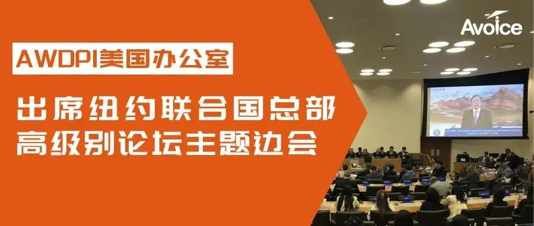
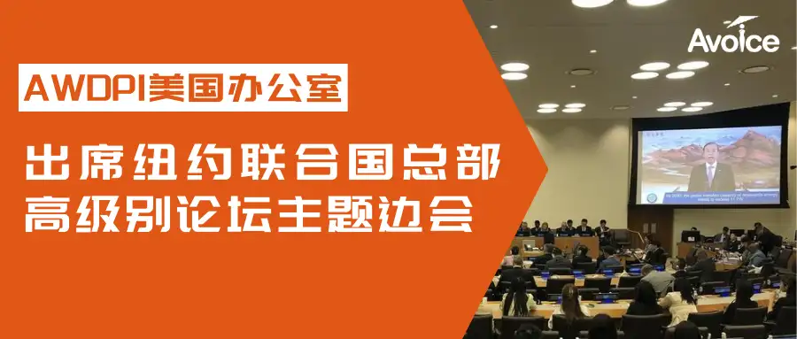
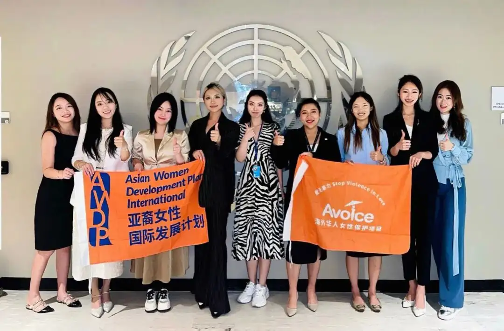
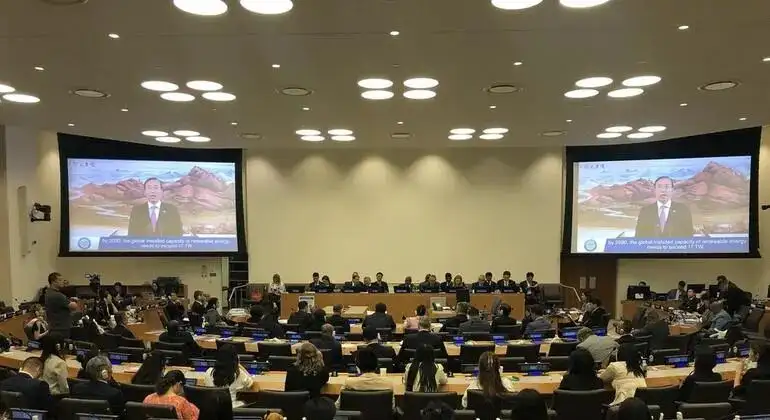
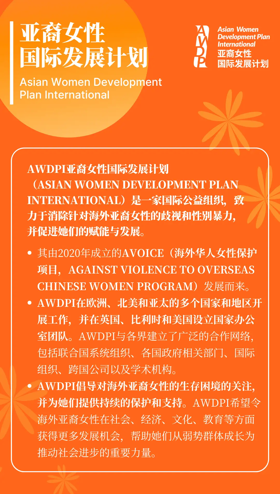

AWDPI亚裔女性国际发展计划的美国办公室团队近日出席了在联合国纽约总部举行的高级别论坛全球能源互联网主题边会，主题为“加快全球能源转型与互联互通，促进实现可持续发展目标”。
这次边会是联合国可持续发展高级别政治论坛的一部分，吸引了来自全球各地的官员、专家和学者的广泛关注。

会议背景
这一年度盛会于7月10日隆重开幕，由全球能源互联网发展合作组织、中国常驻联合国代表团、联合国亚洲及太平洋经济社会委员会、联合国欧洲经济委员会、联合国西亚经济社会委员会、联合国可持续发展解决方案网络以及拉丁美洲能源组织联合举办。会议旨在探讨如何通过加快全球能源转型和互联互通来实现2030年可持续发展目标（SDGs）。
第78届联合国大会主席弗朗西斯、联合国常务副秘书长阿明娜·穆罕默德、中国常驻联合国代表傅聪、联合国开发计划署署长阿奇姆·施泰纳、联合国主管经济和社会事务的副秘书长李军华、中国气候变化事务特使刘振民以及联合国欧洲、西亚、亚太、拉丁美洲和加勒比地区经济和社会委员会的负责人以线上和线下方式参加了这次会议。
重要谈话及见解
在这次会议上，第78届联合国大会主席弗朗西斯亲自发表讲话，强调了加快向清洁和可再生能源系统过渡的重要性，并呼吁全球合作和大胆的领导。联合国常务副秘书长阿明娜·穆罕默德通过录像视频方式发表讲话，指出可持续发展目标7（确保人人获得可负担、可靠和可持续的现代能源）对于实现其他可持续发展目标的关键性。

全球能源互联网发展合作组织
此外，由中国发起成立的全球能源互联网发展合作组织在会议期间发布了首份《全球电力发展指数研究》 ，提出多维度、系统化的电力发展综合评价体系，从供应保障、消费服务、绿色低碳、技术创新四个维度，科学评估全球各区域和主要国家电力发展水平。
结语
这次参加联合国全球能源互联网边会，不仅展示了Avoice在全球舞台上的积极参与，更进一步坚定了我们致力于全球性议题和性别平等的决心。通过参与这些全球会议，我们展示了在国际事务中的影响力，尤其是提升女性在能源转型和可持续发展中的角色和地位。我们相信，通过不断努力和广泛合作，能够为全球女性和可持续发展事业带来更多积极的改变。
感谢每一位支持和关注Avoice的朋友，期待未来与大家一起，共同推动更多美好的变化！
关于AWDPI

撰稿｜Julie
审校｜Yimar
排版/封面｜游舸